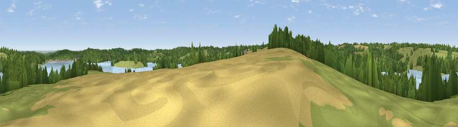

Viewpoint near Woods Green
#31452 in England · top 26% of its area beats it · near Woods GreenWhere it is
The exact computed spot (TQ 66925 32575). Click the marker for map links.
The view, rendered

A 360° render of this exact spot computed from the terrain model, tree cover and land cover — summer colours, afternoon light, calibrated against photographs of famous viewpoints. Real trees, hedges and buildings will differ in detail.
The panorama
Grey silhouette: terrain skyline in each direction (720 bearings, Earth curvature and refraction included). Dashed green: skyline with trees (+15 m) and buildings (+8 m) as obstacles. Blue strip: how far the ground is visible on each bearing.
Where the view opens
Wedge length = distance to the farthest visible ground on that bearing (vegetation-aware). Rings at 10, 25 and 50 km.
What fills the view
36% woodland · 30% water · 29% grassland · 4% cropland ·
Angular shares of the visible panorama (visual magnitude), not map area. Landscape diversity 0.54 (0–1 Shannon).
Key numbers
More beautiful places nearby
The staircase of upgrades: each row has a higher view potential than everything closer. Driving times are estimates from straight-line distance, calibrated against real road routing — check an actual route before setting out.
| Place | Direction | Drive | Score |
|---|---|---|---|
| Viewpoint near Woods Green | WNW · 4 km | ~9 min | 44.7 |
| Viewpoint near Burwash Common | SSW · 10 km | ~19 min | 52.1 |
| Viewpoint near Argos Hill | WSW · 11 km | ~21 min | 53.0 |
| Brightling Obelisk [Brightling Down] | S · 11 km | ~21 min | 69.1 |
| Viewpoint near Three Oaks | SE · 25 km | ~41 min | 69.3 |
| Viewpoint near Guestling Green | SE · 28 km | ~44 min | 72.2 |
| Viewpoint near Fairlight | SE · 28 km | ~44 min | 74.5 |
| Viewpoint near Fairlight | SE · 28 km | ~45 min | 75.1 |
51.06824, 0.38107 · source: screening · position refined by local search. Computed location — check access rights before visiting.